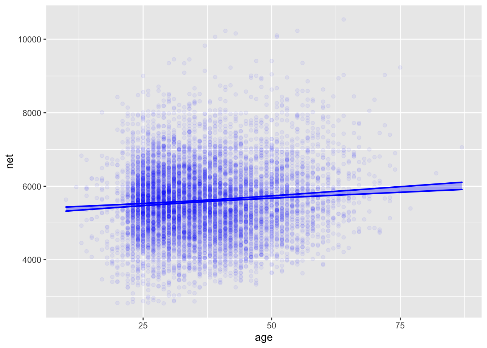
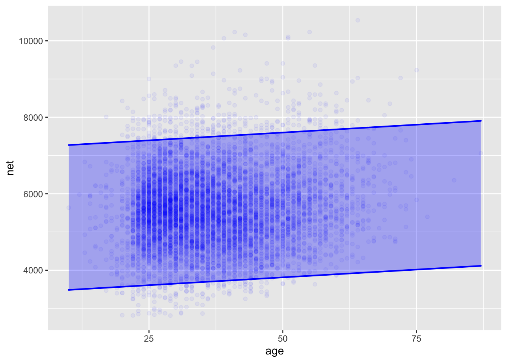

time_mod <- lm(time ~ distance + climb, data = Hill_racing)Math 300R Lesson 26 Reading Notes
Constructing a prediction interval
In Lesson 25 you encountered the prediction interval. A model is trained on historical data. When a prediction is needed, values for the known inputs are provided and the model function is used to produce the output from the model. For instance, here’s a model which relates the running times in Scottish hill races to the race distance and climb.
Every model has a “model function” which calculates the value of the output when given values for the inputs. We won’t often have to work with the model function because there is additional information, not provided by the model function that lets us make better interpretations of the model. But, for the sake of illustration, here we will extract the model function and evaluate it for a 10-km-long race that climbs 500m.
Demonstration: Extracting and evaluating the model function
time_fun <- makeFun(time_mod) # Extract model function
time_fun(distance=10, climb=500) #Evaluate it 1
3372.985 The output of the model function is a point prediction: a single value. Here, that value is 3373 seconds, or about 56 minutes.
Many people like a point prediction, possibly because the single number suggests a single, correct answer, which is somehow emotionally comforting. But the comfort is unjustified.
A proper form for a prediction is a prediction interval; two numbers setting the lower and upper limits for likely outcome once the new 10-km/500m race is actually run. To construct a prediction interval, use the model_eval() function, giving as arguments the prediction model as well as the inputs:
model_eval(time_mod, distance=10, climb=500) distance climb .output .lwr .upr
1 10 500 3372.985 1664.41 5081.56From this report, you can read off the same model output as provided by the model function. But added to it are the lower and upper bounds of the prediction interval, here 1660 s to 5082 d. That’s a big interval! The low end is less than one-third the time of the high end.
This Lesson is about what goes into finding a prediction interval. Evidently, there are a lot of other factors in Scottish hill racing than distance and climb.
Where does the prediction interval come from
The prediction interval has two distinct components:
- The uncertainty in the model function and hence in the output of the model function.
- The size of the residuals found when training the model.
Consider first the model function. For the running-time model, we can construct the model function from the coefficients of the linear model. These are:
time_mod %>% coefficients()(Intercept) distance climb
-469.976937 253.808295 2.609758 The model function is therefore
\[t(d, c) \equiv -470 + 254 d + 2.61 c\]
To get the point prediction, simply calculate \(t(d=10, c=500)\).
The statistical thinker knows that rather than a point estimate for the coefficients, it is better to state the model in terms of the confidence interval on the coefficients. Here, that is:
time_mod %>% confint() 2.5 % 97.5 %
(Intercept) -533.432471 -406.521402
distance 246.387096 261.229494
climb 2.493307 2.726209Since we cannot legitimately claim to know the values of the coefficients any better than indicated by these confidence intervals, we ought to temper our claims about the model function so that it reflects the uncertainty in the coefficients. For instance, we might provide an interval for the model output, using in an “upper” function the high ends of the confidence intervals on the coefficients and another, “lower” function that uses the low ends of the confidence interval. Like this:
\[t_{upr}(d,c) \equiv -407 + 261 d + 2.72 c\\ t_{lwr}(d,c) \equiv -533 + 246 d + 2.49 c\]
To get an interval on the model output, we can evaluate both the lower and upper functions. That would give us \(t_{lwr}(10, 500) = 3172\) and \(t_{upr}(10, 500) = 3569\).
This particular idea for generating the “lower” and “upper” functions has the right spirit, but is not on target mathematically. The reason is that using the low end of the confidence interval for all coefficients is overly pessimistic; usually the uncertainty in the different coefficients cancels out to some extent.
This is not the place to go into the mathematics of making the “lower” and “upper” functions. Without going into any mathematical details we’ll just stipulate that model_eval() knows how to do the calculations correctly. To see the results of the correct calculation, ask model_eval() for a confidence interval on the model output.
model_eval(time_mod, distance=10, climb=500, interval="confidence") distance climb .output .lwr .upr
1 10 500 3372.985 3335.264 3410.706Reading this report, you can see that the confidence interval on the model output for a 10km/500m race is pretty narrow: 3335 seconds to 3411 seconds, or, in plus-or-minus format, \(3373 \pm 38\) seconds.
Let’s compare the confidence interval on the model output to the prediction interval as calculated by model_eval(). To repeat a calculation that we did at the start of the Lesson, the prediction interval is
model_eval(time_mod, distance=10, climb=500, interval="prediction") distance climb .output .lwr .upr
1 10 500 3372.985 1664.41 5081.56The prediction interval is huge compared to the confidence interval: 1664 to 5082 seconds, or, in plus-or-minus format, \(3373 \pm 1709\) seconds.
Why is the prediction interval so much wider than the confidence interval? The confidence interval reports on the sampling variation of a model constructed as a kind of average over all the data, the \(n=2236\) participants recorded in the Hill_racing data frame. But each individual runner in Hill_racing has their own individual time: not an average but just for the individual. The individual value might be larger or smaller than the average. How much larger or smaller? This is recorded in the residuals for the model. As always, we can measure the variation from individual to individual in their residuals with the standard deviation.
time_mod %>% residuals() %>% sd()[1] 870.6588Keeping in mind that the overall spread of the residuals is plus-or-minus “twice” the standard deviation of the residuals, we can say that the residuals indicate an additional uncertainty in the prediction for a runner of about \(\pm 1700\) seconds. This \(\pm 1700\) seconds is our estimate of the noise in the measurements. The confidence interval, is about the sampling variation in the signal. This sampling variation is the portion of noise that is inherited by the averaging process that is involved in calculating the coefficient.
The prediction interval is, in this case, completely dominated by noise; the sampling variability contributes only a tiny amount of addition uncertainty.
Demonstration: Simple-minded data analysis shows why
We constructed our model of running time using the “linear least-squares” modeling methodology implemented by the lm() model-training function. For the purpose of demonstration, we’ll show you a simple-minded method to make a prediction. This simple-minded method would give results more or less equivalent to the least squares method if we had an almost infinite amount of data. Since we don’t, the simple-minded method is not as reliable as the least-squares method.
Remember our goal: to predict the running time for a 10km race with a 500m climb. All that we have to inform the prediction is the historical data contained in the Hill_racing data frame. The simple-minded method is … well … simple to understand. We will pull out from the Hill_racing data frame those rows where the race distance is close to 10km and the race climb is close to 500m. For example:
close_rows <- Hill_racing %>%
filter(9 <= distance, distance <= 11,
450 <= climb, climb <= 550)
## the prediction
close_rows %>% summarize(sample_size=n(), pred = mean(time))# A tibble: 1 × 2
sample_size pred
<int> <dbl>
1 52 3523.You might not agree with our definition of “close to 10km” as “between 9 and 11”, and similarly for climb.
To get the confidence interval on this simple-minded prediction, we point out that the value of the mean time is the same as the coefficient from the model time ~ 1. Let’s fit that model formula to the close_rows and look at the coefficient and confidence interval.
simple_mod <- lm(time ~ 1, data = close_rows)
simple_mod %>% coefficients()(Intercept)
3523.481 simple_mod %>% confint() 2.5 % 97.5 %
(Intercept) 3363.901 3683.061To interpret this confidence interval, we can plot the actual running times and compare them to the interval, as in Figure 1
ggplot(close_rows, aes(y=time, x=1)) +
geom_jitter(width=0.2) + xlim(0,2) +
geom_violin(fill="blue", alpha=0.2, color=NA) +
geom_errorbar(aes(ymin=3364, ymax=3683), color="red") +
geom_errorbar(aes(ymin=1665, ymax=5082, x=1.5), color="blue")
Hill_racing with a distance close to 10km and climb close to 500m. The confidence interval on the mean time (shown in red) is narrow compared to the prediction interval (blue) calculated from the whole data frame and the model time ~ distance + climb.Example: Predicting running time from age
We shift the running scene from Scotland to Washington, DC. The race now is a single 10-miler with almost 9000 registered participants. We wish to predict the running time based on age. Since we’re looking at the prediction as a function of an input variable, what we formerly showed using the “errorbar” glyph is now shown using a ribbon or band. As you’ll see, the prediction band is so large as to be useless. But you’ll also see why the confidence band on the model output is completely misleading about the uncertainty in the prediction.
The following commands train the model net ~ age (where net is the net running time, start line to finish line) and plot the confidence band on the model output along with the actual data.
age_mod <- lm(net ~ age, data = TenMileRace)
model_plot(age_mod, x=age, interval="confidence", data_alpha=0.05)
net ~ age. This includes only a tiny fraction of the actual data points.You can see that the confidence band on the model output includes only a minute fraction of the actual running times recorded in TenMileRace. On the other hand, the prediction band—Figure 3 —includes the large majority of the actual running times.
model_plot(age_mod, x=age, interval="prediction", data_alpha=0.05)
net ~ age. This includes the vast majority of the actual data points.The prediction interval doesn’t include all the actual running times, but it is not meant to. The prediction interval shown is a 95% prediction interval, and so ought to include only about 95% of the actual running times.
To summarize:
- When making a prediction, report a prediction interval.
- The prediction interval is always larger than the confidence interval and often much larger.
The confidence interval is not useful for predictions. Use a confidence interval when looking at an effect size. Graphically, the confidence interval is useful to indicate whether there is an overall trend in the model. For instance, Figure 2 shows a clear upward trend in running time with age. There is no level or negatively sloping line compatible with the confidence interval.